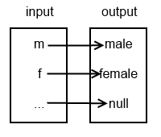

parameters are variables that must be passed into a function when it is called
arguments are the values passed to a function when calling it
parameters and arguments are inside parentheses
in print_double(3), 3 is the argument
notice that the number of arguments match the number of parameters
in def print_double(x), x is the parameter
the parameter takes the value of the argument, e.g. x will have a value of 3 here for the first procedure call
functions can be called as many times as you like
Parameterized procedure example
def print_lowercase(x):
print(x.lower())
print_lowercase("HeLlO") # "hello"
print_lowercase(5) # crash: 'int' object has no attribute 'lower'
parameters must be of the right
a string function can't be called on an integer
Procedure exercise 1
Define and call a procedure with no parameters that adds 2 and 3 and prints the result.
Procedure exercise 1 solution
def add():
print(2 + 3)
add()
Parameterized procedure example
def bottles_lyric(num_bottles): # define procedure
print(num_bottles, "bottles of beer on the wall.")
print(num_bottles, "bottles of beer.")
print("You take one down and pass it around ... ")
print(num_bottles - 1, "bottles of beer on the wall.")
bottles_lyric(10) # call procedure
bottles_lyric(9) # call procedure
bottles_lyric(8) # call procedure
in bottles_lyric(10), 10 is the argument
in def bottles_lyric(num_bottles), num_bottles is the parameter
the parameter takes the value of the argument, e.g. num_bottles will have a value of 10 here
Procedure exercise 2
Write a program to print all of the lyrics to the "bottles of bet on the wall" song, stating with 100 bottles.
Procedure exercise 2 solution
def bottles_lyric(num_bottles): # define procedure
print(num_bottles, "bottles of beer on the wall.")
print(num_bottles, "bottles of beer.")
print("You take one down and pass it around ... ")
print(num_bottles - 1, "bottles of beer on the wall.")
for i in range(100, 0, -1):
bottles_lyric(i)
Function naming conventions
a function should be named according to what it does
if it’s hard to accurately name a function, it probably means it’s doing too much and should be broken into multiple functions
follow the verb_noun system when possible e.g. get_lives, load_file
functions should be no longer than n statements where n is defined in style guide
consider that webkit functions contain on average 2.1 statements, firefox 6.7 and IE 7.1
http://aptiverse.com/blog/closer_look_at_chrome/
Procedure exercise 3
Write a program to print the square of any number the user inputs. The number to be squared should be a parameter to the "print_square" procedure.
Procedure exercise 3 solution
def print_square(x):
print(x * x)
user_input = int(input("Input number to be squared: "))
print_square(user_input)
Procedure exercise 4
Write a program that calls a procedure called "log" that appends a string to a file called "my_log.log". Call the procedure with several different strings.
def display_sum(x, y):
print("The sum of", x, "and", y, "is", x + y)
display_sum(2,3)
arguments are assigned to parameters in order, e.g. x becomes 2, y becomes 3
Procedure exercise 5
Write a program with a procedure that subtracts and divides its two number parameters and logs the results of each calculation. You don't need to write your own procedure just to subtract etc.
Write a program with a procedure with two parameters that tells the user if the first or second parameter is the biggest of the two, or if they're equal in size.
Procedure exercise 6 solution
def print_highest(x, y):
if x > y:
print("The first parameter is the highest")
elif y > x:
print("The second parameter is the highest")
else:
print("The parameters have equal value")
print_highest(1, 2)
print_highest(1, 1)
print_highest(2, 1)
Procedure exercise 7
Write a procedure that prints the absolute value of any number passed as an argument.
Procedure exercise 7 solution
def print_absolute(x):
if x < 0:
print(x * -1)
else:
print(x)
print_absolute(3)
print_absolute(0)
print_absolute(-3)
the return keyword precedes the values returned from the function
right hand side of equals is evaluated first
imagine the function on the right hand side of the equals simply becoming the value
value is assigned to variable as per usual
Function example
def add(x, y):
return x + y
sum = add(2, 3)
print("sum is", sum)
functions can have multiple parameters too
add is a user defined function
str and len are functions from the standard library
randint is a function from the random module
list of standard library functions: http://docs.python.org/3/library/functions.html
Function example
def expand_letter_to_gender(letter):
if letter == 'm':
return "male"
elif letter == 'f':
return "female"
else:
return "null"
john = expand_letter_to_gender('m')
joan = expand_letter_to_gender('f')
zorbak = expand_letter_to_gender('q')
print("john is", john)
print("joan is", joan)
print("zorbak is", zorbak)
functions can have multiple possible return values

Function exercise 1
Write a function that takes two integers as input. The function should return the largest of the two integers.
Function exercise 1 solution
def find_highest(x, y):
highest = None
if x > y:
highest = x
elif y > x:
highest = y
else:
highest = x # just pick one
return highest
print(find_highest(1, 2))
print(find_highest(1, 1))
print(find_highest(2, 1))
Function exercise 2
Write a function that converts centimeters to inches. Lookup conversion formula on Wikipedia if you don't know it.
Write a function that converts kilograms to pounds.
Function exercise 2 solution
def kg_to_pounds(kg):
return kg * 2.204
kg = 80
pounds = kg_to_pounds(kg)
print(kg, "kilos is", pounds, "pounds")
Function exercise 4
Create a function calculate_bmi_metric(weight_kg, height_cm) that returns the BMI of the user input it receives. Write another function find_bmi_category(bmi) that returns the weight category for that BMI e.g. "underweight". Write a procedure, display_bmi_metric(weight_kg, height_cm), to display all information reagrding BMI. Both calculate_bmi_metric and find_bmi_category should be called from within display_bmi_metric.
Function exercise 5
Build upon the previous program to create a function calculate_bmi_imperial(weight_pounds, height_inches) and a procedure display_bmi_imperial(weight_pounds, height_inches). Give the user the option of using either metric or imperial measurements.
Function exercise 6
Write a function that accepts a string and returns the string with letter case inverted e.g. "hEllO" becomes "HeLLo".
Function exercise 7
Write a function that counts the number of times a substring occurs in a string e.g. the number of times "is" occurs in "is it this or isn't it?". Fell free to use standard library functions.
Scope in Python
The scope of an identifier is the part of a computer program where the identifier, a name that refers to some entity in the program, can be used to find the referred entity.
Wikipedia
Scope is an enclosing context where values and expressions are associated.
Princeton
Scope in Python
functions
generator expressions
classes
modules
Function scope
def print_double(x):
x *= 2
print(x) # x no longer exists after this statement
i = 0
while i < 10:
print_double(i)
i += 1
print("i after while loop is", i)
Function scope
def print_double(x):
y = x * 2
print(y) # x and y no longer exist after this statement
i = 0
while i < 10:
print_double(i)
i += 1
print("i after while loop is", i)
Function scope
def print_double(i):
# Changing this i has no effect on other i
# this i has function scope and is destroyed
# after the function call is finished.
i *= 2
print(i)
i = 0
while i < 10:
print_double(i)
i += 1
print("i after while loop is", i)
Module scope
def print_double():
# Changing this i actually changes the other i.
global i
i *= 2
print(i)
i = 0
while i < 10:
print_double()
i += 1
print("i after while loop is", i)
global keyword is applied to a module scope variable to allow its mutation in local context
global variables can be really useful
but they can make code much harder to reason about
much more state must be remebered and considered when using globals
order of function calls matter
the main function
def main():
print("In main function")
if __name__ == "__main__":
main()
__name__ is a special global variable in Python
if a script is executed directly, __name__ is __main__
ensures that only YOUR main function is executed
the main function
import random
print(__name__) # __main__
print(random.__name__) # random
if a script is imported, __name__ is the name of that script/module
the main function
def main():
print("In main function")
if __name__ == "__main__":
main()
code is often packaged into modules
all code in imported module is executed
this could mean simply importing a module executes prints etc.
executing code other than function definitions is considered bad practice
the main function
import sys
def main(argv):
# consider using argparse module
print(argv)
if __name__ == "__main__":
main(sys.argv)
main function often used to take command line arguments
the main function
def add(x, y):
return x + y
def main():
sum = add(2, 3)
print("sum is", sum)
if __name__ == "__main__":
main()